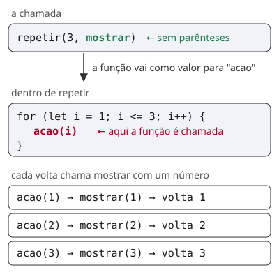

Parte de Etapa 1b: Funções. Responda no chat (1: ..., 2: ...), coloque sure ou guess depois de cada resposta, e diga done no fim. Ajuda: 3 (exemplo resolvido passo a passo).
Da última vez, o palpite ficou sem resposta. A pergunta era: o que repetir(3, (n) => console.log("volta " + n)) mostra? É a b) volta 1, volta 2 e volta 3.
repetir chama ela com acao(i), uma vez por volta.volta 1, volta 2 e volta 3: o parâmetro acao recebe a arrow, e o loop chama ela com 1, 2 e 3.acao é uma função, porque recebeu uma arrow.[Function: acao]: isso apareceria com console.log(acao), sem chamar.O repetir sabe fazer o loop, mas não sabe o que fazer em cada volta. Se cada ação precisasse de um loop novo, você escreveria o mesmo for várias vezes. A solução é passar a ação como parâmetro.
Na lição 02, você viu que somar, sem parênteses, é a própria função, guardada como valor. Um valor pode ir para outra função como argumento. Uma função passada assim se chama callback: a função de fora recebe a callback e chama ela por dentro, com os argumentos certos (MDN, glossário, "Callback function"). Quem chama a callback é a função de fora, não você.
function repetir(vezes, acao) {
for (let i = 1; i <= vezes; i++) {
acao(i)
}
}
const mostrar = (n) => console.log("volta " + n)
repetir(3, mostrar)

| Passo | O que aconteceu |
|---|---|
| 1 | repetir(3, mostrar): vezes recebe 3, e acao recebe a função mostrar, sem rodar ela |
| 2 | na primeira volta, acao(1) tem parênteses: agora mostrar roda com n = 1 e mostra volta 1 |
| 3 | as voltas 2 e 3 fazem o mesmo com 2 e 3 |
| 4 | para fazer outra coisa em cada volta, você troca só a callback. O repetir continua igual |
Troque a callback e o número de voltas:
Q1. Um colega troca a última linha do exemplo por repetir(3, mostrar()) e diz: "é a mesma coisa, só pus os parênteses para a função rodar". Com as suas palavras: o que vai para o parâmetro acao nesse caso, e o que acontece quando o loop tenta fazer acao(1)?
se eu chamar ação() seria como se eu chamasse a função sem parametro
Certo em parte: com
repetir(3, mostrar()), omostrarroda na hora, sem parâmetro, antes dorepetircomeçar. Ele mostravolta undefined. Faltou dizer o que vai para oacao, e o que o loop faz com isso.Pergunta: o
mostrarnão temreturn. Que valor ele devolve? Esse é o valor que oacaorecebe. Teste no Node com o exemplo da lição e diga o que acontece na primeira volta do loop (MDN, glossário, "Callback function").
Como mostrar() não retorna uma função, o valor passado para acao será undefined. Então, quando o loop tentar executar acao(1), ocorrerá um erro, pois estamos tentando chamar undefined como se fosse uma função.
Certo. Oacaorecebeundefined, eacao(1)dáTypeError: acao is not a function. Antes disso, aparecevolta undefined, porque omostrar()rodou uma vez na chamada (MDN, glossário, "Callback function").
Q2. Crie o arquivo licao-04.js nesta pasta, sem prompt. Nele:
prioridadeValida da lição 03;nomeValido, uma arrow sem chaves que devolve true se o texto não é vazio;checar(texto, validar). Ela chama a callback validar com o texto, e devolve "ok: " ou "invalido: " seguido do texto. Ela não usa console.log e não chama a prioridadeValida nem a nomeValido pelo nome.Mostre o resultado destas 4 chamadas: checar("2", prioridadeValida), checar("9", prioridadeValida), checar("Estudar", nomeValido) e checar("", nomeValido). Rode e mande a saída.
Feito
Certo. O arquivo foi salvo às 13:47. A saída foi
ok: 2,inválido: 9,ok: Estudareinválido:. Achecarchama a callback comvalidar(texto)e não sabe qual validador recebeu. É isso que a deixa servir para os dois casos.Dois detalhes, sem refazer:
const nomeValido = (nome) => valido = nome!=""cria uma variávelvalidosemletnemconst. O JavaScript cria essa variável fora de tudo, sem avisar. Com"use strict"no topo do arquivo, a mesma linha dáReferenceError: valido is not defined. A arrow sem chaves já devolve o valor, então ovalido =pode sair.- Use
!==em vez de!=, como a regra do===da 1a.
Agora você consegue passar uma função como callback e escrever uma função que chama a callback que recebeu.
Fonte: MDN Web Docs, glossário, "Callback function"; Guia de JavaScript, "Funções", seção "Function expressions".